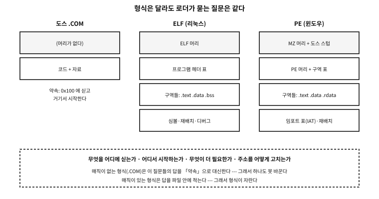

부록 J — 실행 파일의 형식들
gcc hello.c 를 치면 a.out 이 나온다. 그 파일을 실행하면 프로그램이 돈다. 그 사이에 무엇이 있는가. 17장이 「번역」을, 56장이 「이어 붙이기」를 다뤘다면, 이 부록은 그 결과물 — 파일 하나 — 의 생김새를 본다.
형식은 여럿이고, 명세는 두껍다. 그러나 명세를 읽지 않아도 되는 이유가 있다. 로더가 파일에게 묻는 질문은 형식이 달라도 같다. 그 질문을 알면 어떤 형식이든 앞머리 몇 바이트에서 이야기를 시작할 수 있다.
플랫폼 노트. 이 부록의 근거
w32app.exe 로 바꾸었다 — 어느 프로그램인지는 이야기와 무관하다. 형식 명세는 각 발행처(ELF(executable and linkable format): System V ABI(application binary interface), PE: Microsoft PE/COFF 명세)가 권위이고, 여기 적은 것은 그 초입에 해당하는 사실들이다.로더가 파일에게 묻는 네 가지#
파일을 실행한다는 것은 결국 커널과 로더가 그 파일을 읽고 기억을 차려 주는 일이다. 그때 묻는 것이 넷이다.
| 질문 | 무엇을 정하나 | 형식에서 이것을 담는 곳 |
|---|---|---|
| 무엇을 어디에 싣는가 | 코드·자료가 기억의 어느 주소로 가는가 | 프로그램 헤더(ELF), 구역 표(PE) |
| 어디서 시작하는가 | 첫 명령의 주소 | 진입점 필드 |
| 무엇이 더 필요한가 | 함께 실려야 할 라이브러리 | PT_INTERP·동적 표(ELF), 임포트 표(PE) |
| 주소를 어떻게 고치는가 | 실린 자리가 달라졌을 때 고칠 자리들 | 재배치 표 |
표 105.1 — 실행 파일 형식이 답해야 하는 네 가지
이 넷에 답하는 방식이 형식의 역사다. 답을 약속으로 때우면 형식이 없어도 되고 (.COM), 답을 파일 안에 적으면 형식이 자란다(ELF, PE).

그림 105.1 — 형식은 달라도 로더가 묻는 질문은 같다.
머리가 없는 형식 — 도스의 .COM#
가장 단순한 답은 「묻지 않는다」다. .COM 파일에는 헤더가 없다. 파일의 첫 바이트가 곧 첫 명령이고, 로더는 그것을 정해진 자리(세그먼트 시작에서 0x100 바이트 뒤)에 통째로 싣고 그 자리로 뛴다. 앞의 0x100 바이트는 도스가 쓰는 표(PSP)의 자리다.
그래서 .COM 은 이런 물건이 된다.
- 한 세그먼트를 넘지 못한다. 코드·자료·스택이 모두 64 KiB 안에 들어가야 한다.
- 재배치가 없다. 언제나 같은 자리에 실리니 고칠 것이 없다.
- 형식 검사가 없다. 아무 파일이나 실행할 수 있다 — 그리고 대개 기계가 멈춘다.
★ 이 단순함이 그 시절에는 미덕이었다. 실을 자리가 하나뿐이고 프로그램이 하나만 도는 기계에서는, 약속이 곧 형식이어도 충분했다. 형식이 자란 이유는 기계가 「여럿을 동시에, 서로 다른 자리에」 싣기 시작했기 때문이다.
MZ — 도스가 붙인 최초의 머리#
프로그램이 64 KiB 를 넘자 세그먼트가 여럿 필요해졌고, 그러자 어느 세그먼트에 실렸는지에 따라 고쳐야 할 숫자가 생겼다. 그 목록을 담으려고 헤더가 붙는다. 그것이 MZ 로 시작하는 도스 실행 파일이다(마크 즈비코프스키의 머리글자다).
머리에는 이런 것이 들어 있다 — 파일이 몇 쪽인지, 재배치 항목이 몇 개인지, 처음 CS:IP 와 SS:SP 를 무엇으로 둘지. 곧 표 105.1의 네 질문에 처음으로 파일이 스스로 답한 형식이다.
그리고 놀랍게도 이 머리는 아직 살아 있다.
요즘 윈도우 실행 파일의 앞 128바이트
!This program cannot be run in DOS mode.
실제 사례. 2026년의 윈도우 프로그램이 아직 도스에게 말을 건다
위 문구는 이 기계에 있던 현대 64비트 윈도우 실행 파일의 앞머리에서 그대로 꺼낸 것이다. 요즘 .exe 는 여전히 MZ 로 시작하고, 그 뒤에 This program cannot be run in DOS mode 를 찍고 끝나는 작은 도스 프로그램(스텁)이 들어 있다. 진짜 머리는 그 뒤에 있고, MZ 머리의 한 필드가 그 자리를 가리킨다.
이유는 하나다. 옛 로더에게 「나는 네가 아는 형식이지만 네 것이 아니다」라고 말해 줄 방법이 그것뿐이었다. 호환은 이렇게 화석으로 남는다.
a.out — 유닉스의 첫 형식, 그리고 그 한계#
이름이 낯익을 것이다. gcc 가 아무 이름도 주지 않으면 아직도 a.out 을 만든다. 그 이름은 형식의 이름이었다 — assembler output.
a.out 은 헤더 하나에 「코드 크기, 자료 크기, .bss 크기, 심볼 표 크기, 진입점」을 적고 끝낸다. 매직 숫자도 8진수 셋으로 단순했다(0407, 0410, 0413 — 각각 쓰기 가능한 코드, 읽기 전용 코드, 쪽 정렬).
그런데 1980년대 후반에 공유 라이브러리가 필요해지자 이 형식이 벽에 부딪힌다. 구역이 셋으로 못박혀 있어 새 종류의 자료를 담을 자리가 없었다. 확장하려면 헤더에 필드를 더해야 하는데, 그러면 옛 도구가 못 읽는다.
★ 여기서 배울 것은 형식의 세부가 아니라 설계의 교훈이다. 자라야 하는 것은 「이름 붙은 구역의 목록」으로 만들고, 못 자라는 것은 「고정된 필드」로 만든다. 뒤이은 형식들이 전부 이 길을 갔다 — COFF 도, PE 도, ELF 도 구역에 이름을 붙이고 개수를 세지 않는다.
COFF, 그리고 그 후손 PE#
a.out 다음이 COFF(Common Object File Format)다. 유닉스 System V 가 쓰던 형식으로, 이름 붙은 구역과 그 구역의 표를 도입했다. 유닉스 쪽에서는 곧 ELF 에 밀렸지만, COFF 는 다른 곳에서 아주 오래 살아남는다 — 마이크로소프트가 그것을 가져가 확장했기 때문이다. 그 결과가 PE(Portable Executable)다.
PE 파일의 생김새는 이렇다. MZ 머리와 도스 스텁이 앞에 있고, 그 뒤에 PE\0\0 서명과 COFF 머리, 그 다음에 구역 표가 온다. 우리 도구로 실제로 읽어 보자.
examples/apx-formats/run.sh
#!/bin/sh
# 실행 파일 형식 시연 --- 세 가지 형식을 *직접 만들어* 같은 질문을 던진다.
#
# ★ 왜 스크립트인가 --- `read_headers` 는 파일을 인자로 받는다. 그리고 그 파일들이
# 먼저 있어야 한다: PIE 실행 파일, 고정 주소 실행 파일, 그리고 윈도우 실행 파일.
# ★ 윈도우 파일은 *이 자리에서 만든다.* 기계에 있던 남의 프로그램을 가져다 쓰면
# 재현되지 않고, 남의 사정이 책에 새어 든다. mingw 가 없으면 그 줄만 건너뛰고
# *건너뛰었다고 말한다* --- 조용히 빠지면 독자는 형식이 둘뿐인 줄 안다.
set -eu
cd "$(dirname "$0")"
cc=${CC:-gcc}
win=x86_64-w64-mingw32-gcc
$cc -std=c23 -Wall -Wextra -O0 -o ./rh read_headers.c
$cc -std=c23 -Wall -Wextra -O0 -o ./pie ../apx-elf-segments/elf_segments.c
$cc -std=c23 -Wall -Wextra -O0 -no-pie -o ./fixed ../apx-elf-segments/elf_segments.c
files="./pie ./fixed"
if command -v "$win" >/dev/null 2>&1; then
printf 'int main(void){return 0;}\n' > ./w32app.c
"$win" -O0 -o ./w32app.exe ./w32app.c
files="$files ./w32app.exe"
else
echo "(no Windows cross-compiler here: the PE example is skipped)"
fi
./rh $files
rm -f ./rh ./pie ./fixed ./w32app.c ./w32app.exe
실행 결과
./pie
magic : 7f 45 4c 46
format : ELF
width : 64-bit
byte order: little-endian
kind : ET_DYN (shared object / PIE)
entry : 0x10c0
./fixed
magic : 7f 45 4c 46
format : ELF
width : 64-bit
byte order: little-endian
kind : ET_EXEC (fixed address)
entry : 0x4010b0
./w32app.exe
magic : 4d 5a 90 00
format : MZ (DOS executable header)
next hdr : file offset 0x80
format : PE (so this file is MZ + PE, two layers)
machine : 0x8664 (x86-64)
sections : 18
width : PE32+ (64-bit)
같은 프로그램이 세 파일에게 같은 질문을 던졌고, 형식마다 다른 자리에서 답을 찾았다. 셋째 것이 윈도우 실행 파일인데, 두 겹으로 읽힌 것을 보라 — MZ 로 시작하지만 진짜 머리는 파일 위치 0x80 에 있다.
PE 에서 특히 알아 둘 것 셋.
| 무엇 | 무엇을 하는가 |
|---|---|
| 임포트 표(IAT) | 「나는 kernel32.dll 의 CreateFileW 가 필요하다」를 적어 둔 목록. 로더가 그 자리에 실제 주소를 채워 넣는다 — ELF 의 PLT·GOT 와 같은 일 |
| 기준 재배치 표 | 원하는 주소에 못 실렸을 때 고칠 자리들. 이것이 있어야 ASLR(address space layout randomization)이 선다 |
| 서브시스템 필드 | 콘솔인지 GUI 인지 — 그리고 값 10 이 UEFI 응용, 11 13 은 UEFI 드라이버와 ROM 이다 |
표 105.2 — PE 에서 알아 둘 세 가지
★ 마지막 줄이 이 부록과 다음 부록을 잇는다. UEFI 펌웨어가 실행하는 .efi 파일은 PE 형식이다. 운영체제가 뜨기도 전에 도는 프로그램이 윈도우 실행 파일과 같은 옷을 입고 있는 것이다. 부팅 이야기는 「기계가 깨어나는 순서」 부록에서 이어진다.
ELF — 두 개의 목록#
리눅스를 비롯한 오늘날의 유닉스 계열은 ELF(Executable and Linkable Format)를 쓴다. ELF 의 핵심은 같은 파일을 두 가지 목록으로 본다는 것이다.
- 구역(section) 표 — 링커가 보는 눈.
.text,.data,.bss,.rodata, 심볼 표, 재배치 표, 디버그 정보. 88장에서 본 그 목록이다. - 조각(segment) 표(프로그램 헤더) — 로더가 보는 눈. 「이 범위를 이 주소에 이 권한으로 실어라」.
하나의 파일에 두 목록이 있고, 서로 겹친다. 링크가 끝나면 구역 표는 없어도 프로그램이 돌고(strip 이 그것을 지운다), 조각 표가 없으면 실행 자체가 안 된다.
examples/apx-elf-segments/elf_segments.c
/* 링커가 만드는 「구역」과 로더가 읽는 「조각」은 다른 목록이다.
여기서는 로더가 보는 쪽 --- 프로그램 헤더 --- 을 제 실행 파일에서 읽는다. */
#include <stdio.h>
#include <stdint.h>
#include <string.h>
int main(void)
{
FILE *f = fopen("/proc/self/exe", "rb");
if (!f) { perror("open"); return 1; }
unsigned char eh[64];
if (fread(eh, 1, sizeof eh, f) != sizeof eh) return 1;
uint64_t phoff = 0; memcpy(&phoff, eh + 32, 8);
uint16_t phentsize, phnum;
memcpy(&phentsize, eh + 54, 2); memcpy(&phnum, eh + 56, 2);
printf("%u program headers\n\n", phnum);
printf("%-12s %-8s %10s %10s %s\n", "kind", "perms", "in file", "in memory", "note");
for (unsigned i = 0; i < phnum; i++) {
unsigned char ph[56];
if (fseek(f, (long)(phoff + (uint64_t)i * phentsize), SEEK_SET) != 0) break;
if (fread(ph, 1, sizeof ph, f) != sizeof ph) break;
uint32_t type, flags; uint64_t filesz, memsz;
memcpy(&type, ph, 4); memcpy(&flags, ph + 4, 4);
memcpy(&filesz, ph + 32, 8); memcpy(&memsz, ph + 40, 8);
const char *name;
const char *memo = "";
switch (type) {
case 1: name = "PT_LOAD"; memo = "load this as it is"; break;
case 2: name = "PT_DYNAMIC"; memo = "the table the dynamic linker reads"; break;
case 3: name = "PT_INTERP"; memo = "* the name of the program that will load me"; break;
case 4: name = "PT_NOTE"; memo = "notes such as the build id"; break;
case 6: name = "PT_PHDR"; memo = "this table itself"; break;
case 0x6474e551: name = "GNU_STACK"; memo = "whether the stack is executable"; break;
case 0x6474e552: name = "GNU_RELRO"; memo = "read-only after linking"; break;
default: name = "other"; break;
}
char perm[4] = { flags & 4 ? 'r' : '-', flags & 2 ? 'w' : '-', flags & 1 ? 'x' : '-', 0 };
printf("%-12s %-8s %10llu %10llu %s\n", name, perm,
(unsigned long long)filesz, (unsigned long long)memsz, memo);
if (type == 3) { /* PT_INTERP 는 문자열 하나를 담는다 */
uint64_t off; memcpy(&off, ph + 8, 8);
char buf[128] = { 0 };
long save = ftell(f);
fseek(f, (long)off, SEEK_SET);
fread(buf, 1, sizeof buf - 1 < filesz ? sizeof buf - 1 : (size_t)filesz, f);
fseek(f, save, SEEK_SET);
printf("%-12s %-8s %10s %10s → \"%s\"\n", "", "", "", "", buf);
}
}
fclose(f);
printf("\nnote: where a piece is larger in memory than in the file,\n");
printf(" that difference is .bss --- there is no reason to store zeros.\n");
return 0;
}
실행 결과
14 program headers
kind perms in file in memory note
PT_PHDR r-- 784 784 this table itself
PT_INTERP r-- 28 28 * the name of the program that will load me
→ "/lib64/ld-linux-x86-64.so.2"
PT_LOAD r-- 1968 1968 load this as it is
PT_LOAD r-x 1789 1789 load this as it is
PT_LOAD r-- 868 868 load this as it is
PT_LOAD rw- 640 648 load this as it is
PT_DYNAMIC rw- 480 480 the table the dynamic linker reads
PT_NOTE r-- 32 32 notes such as the build id
PT_NOTE r-- 36 36 notes such as the build id
PT_NOTE r-- 32 32 notes such as the build id
other r-- 32 32
other r-- 44 44
GNU_STACK rw- 0 0 whether the stack is executable
GNU_RELRO r-- 560 560 read-only after linking
note: where a piece is larger in memory than in the file,
that difference is .bss --- there is no reason to store zeros.
읽을 것이 셋이다.
첫째, PT_INTERP 가 「나를 실을 프로그램」의 이름을 담고 있다. 동적 링커의 경로가 문자열로 파일 안에 박혀 있다. 커널은 이 이름을 보고 그 프로그램을 대신 띄운다 — 곧 동적 링크된 실행 파일은 커널이 직접 시작하지 않는다.
둘째, 마지막 PT_LOAD 만 기억에서의 크기가 파일에서의 크기보다 크다. 그 차이가 .bss 다. 0 으로 시작하는 전역을 파일에 0 으로 적어 둘 이유가 없으니, 크기만 적어 두고 커널이 0 인 쪽을 준다.
셋째, 종류가 ET_DYN 이다. 요즘 배포판의 기본이 PIE(위치 독립 실행 파일)이라, 실행 파일이 공유 라이브러리와 같은 종류로 만들어진다. 그래서 매번 다른 주소에 실릴 수 있다(ASLR).
문. .bss 가 파일에 없다면, 프로그램이 커지는 것과 무슨 상관인가?
답. 초기값이 0 이 아닌 전역은 그 값을 파일에 적어 두어야 하므로 파일이 커진다. 0 인 전역은 크기 숫자만 커진다. 임베디드에서 「큰 배열은 .bss 에 두라」는 규율이 여기서 나온다 — 플래시를 아끼는 것이다.
흔한 오해. 확장자가 파일의 형식을 정한다
MZ 와 PE\0\0 를 확인한다. 위 시연이 한 일이 정확히 그것이다 — 이름이 아니라 매직을 읽었다.그 밖의 형식들, 그리고 매직 숫자#
| 형식 | 매직 | 어디서 만나나 |
|---|---|---|
| ELF | 7f 45 4c 46 (\x7fELF) | 리눅스·BSD·솔라리스, 그리고 코어 덤프 |
| PE | 4d 5a(MZ) → PE\0\0 | 윈도우 실행 파일·DLL, 그리고 .efi |
| Mach-O | cf fa ed fe | macOS·iOS |
| 통합 바이너리 | ca fe ba be | 여러 아키텍처를 한 파일에 (Mach-O) |
| 자바 클래스 | ca fe ba be | JVM — 매직이 겹친다 |
| WebAssembly | 00 61 73 6d (\0asm) | 브라우저·런타임 |
| a.out | 07 01 등 8진수 매직 | 옛 유닉스 — 이름만 남았다 |
표 105.3 — 앞머리 몇 바이트로 알아보는 형식들
실제 사례. 같은 매직을 두 형식이 쓴다
0xCAFEBABE 는 자바 클래스 파일의 매직이면서 Mach-O 통합 바이너리의 매직이다. 실제로 도구들이 둘을 헷갈리는 일이 있어, 뒤따르는 필드까지 보아 가른다(통합 바이너리는 그다음이 「아키텍처 개수」인데, 자바는 그 자리가 버전 번호다). 매직은 관습이지 등록된 이름이 아니다 — 앞 시연이 이 줄에서 두 답을 함께 내놓은 이유다.여기서 남기는 것#
복습 정리
- 형식이 다른 것이지 묻는 질문이 다른 것은 아니다 — 무엇을 어디에, 어디서 시작, 무엇이 더 필요, 어떻게 고치는가.
- 답을 약속으로 때우면 형식이 없어도 되고(
.COM), 파일에 적으면 형식이 자란다. a.out이 죽은 이유는 자랄 자리가 없어서였다. 이름 붙은 구역이 그 답이다.- 요즘
.exe가 아직MZ로 시작하는 것처럼, 호환은 화석으로 남는다. - ELF 는 같은 파일을 링커의 눈(구역)과 로더의 눈(조각)으로 함께 본다.
- 파일의 종류는 이름이 아니라 앞머리 몇 바이트가 정한다.